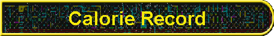
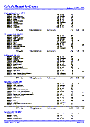
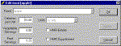
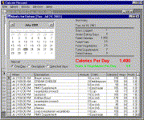

|

|
Software to Manage Your WeightNeed to shed some pounds! Or perhaps you're looking for a way to maintain your slim self. Our CalorieRecord can help you with either goal. CalorieRecord is not a diet. It's a Windows software package that tracks the meals you eat. A diet plans your meals, telling you what to eat and how much. CalorieRecord is based on the concept that the weight you loose, gain or maintain is determined by the number of calories you consume. With CalorieRecord you can go on any diet, or no diet at all -- but if you faithfully type in everything you eat, you'll know how many calories you consume each day.  There are plenty of other useful features too. CalorieRecord can track meals for an unlimited number of users, so a couple or a whole household can use the same database. CalorieRecord also tracks the number of fruit and vegetable servings and whether the current day is an "under eating" day. Balancing a few "under eating" with "overeating" days is the best strategy to still get in favorite foods that might be high in calories. And this leads to another big plus with CalorieRecord and the concept of tracking in general: once you know your particular calorie limits you can loose or maintain weight without the need for a specific diet. You can plan your own eating, consume whatever you like, because you are in charge of your own calorie budget. Counting calories, the traditional way, with a chart is very tedious. Besides
the onerous chore of doing all that math by hand, there's the annoying problem
that calorie charts do not present the data with consistent units of measure.
They'll tell you that a muffin is 100 calories an ounce, coleslaw is 75 calories
a cup, bread is 100 calories a slice and butter is 400 calories for a
quarter-cup.  CalorieRecord has been the ticket to our personal freedom. Bob wrote this program because we didn't want to do all that calorie calculating by hand. Now by just clicking Print we can easily see how many calories we've eaten so far today. It helps when going out to eat because we know how many calories we have left in our individual budgets. And sometimes when we eat more than we should, it's easier to get back on track because we can quickly see in the records where the calorie increases are. It's just like looking through your checkbook records to determine your spending patterns. You can't make the goal to eat less red meat or prepare more vegetables until you have a way of recording and measuring your success. That's why we wrote CalorieRecord and why now we're preparing a release version of this software, which hopefully we'll be able to sell to you! 
About the DemoThis demo is hardwired with two users, Bob and Debee. (The release version will let you add an unlimited number of users and assign them names of your own choosing.) The demo version has a small foods table containing calories for just the foods offered by the HMR Weight Management Program. You can easily add your own foods with their calories, units and number of fruit and vegetable servings. The demo comes with a rough draft of the documentation. The documentation, like the released version is still a work in progress. |
Visit these Spare Time Gizmos
|

{kind=link}
{kind=link}
{kind=link}